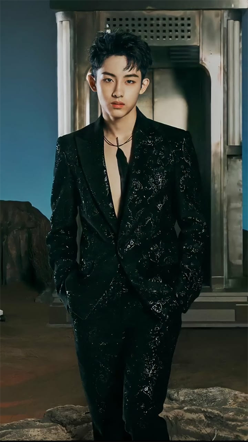

As of February 21st, 2021, NCT has a total of 23 members. I will introduce each one down below with basic info, enjoy!
Taeil
Taeil is the oldest memer of NCT. He is part of NCT 127 and has been on NCT U. He is one of the singers as well as dancer of NCT. He was in NCT 2018 and 2020.
Johnny

Johnny is an American member, originally from Chicago, Illinois. He is in the group NCT 127 as one of the singers, he has also participated in NCT U, NCT 2018, and NCT 2020.
Taeyong
Taeyong is one of the main rappers of NCT. He is the leader of NCT 127 and has participated in NCT U, NCT 2018, and NCT 2020. He is also in the K-Pop group SuperM.
Yuta
Yuta is one of the Japanese members, originally from Osaka, Japan. He is in the group NCT 127 as one of the singers, he has also participated in NCT U, NCT 2018, and NCT 2020.
Kun

Kun is a Chinese member, originally from Sanming, China. He is the leader of WayV and one of the singers, he has also participated in NCT U, NCT 2018, and NCT 2020.
Doyoung
Doyoung is in the group NCT 127 as one of the singers, he has also participated in NCT U, NCT 2018, and NCT 2020.
Ten

Ten is an Thai member, originally from Bangkok, Thailand. He is in the WayV as one of the singers and main dancers, he has also participated in NCT U, NCT 2018, and NCT 2020.
Jaehyun
Jaehyun is in the group NCT 127 as one of the rappers and singers, he has also participated in NCT U, NCT 2018, and NCT 2020.
WinWin

WinWin is a Chinese member, originally from Wenzhou, China. He is in the group NCT 127 and WayV as one of the singers, he has also participated in NCT U, NCT 2018, and NCT 2020.
Jungwoo

Jungwoo is in the group NCT 127 as one of the singers, he has also participated in NCT U, NCT 2018, and NCT 2020.
Lucas
Lucas is an Hong Kong member, originally from Sha Tin District, Hong Kong. He is in the group WayV as one of the main rapper, he has also participated in NCT U, NCT 2018, and NCT 2020.He is also part of K-Pop group SuperM.
Hendery

Hendery is a Chinese member, originally from Macau, China. He is in the group WayV as one of the singers and rappers, he has also participated in NCT U and NCT 2020.
Mark

Mark is a Canadian member, originally from Toronto, Canada. He is in the group NCT 127 and NCT Dream as one of the rappers, he has also participated in NCT U, NCT 2018, and NCT 2020. He is also in K-Pop group SuperM.
Xiaojun

Xiaojun is a Chinese member, originally from Dongguan, China. He is in the group WayV as one of the singers, he has also participated in NCT U and NCT 2020.
Renjun

Renjun is a Chinese member, originally from Jilin City, China. He is in the group NCT Dream as one of the singers, he has also participated in NCT U, NCT 2018, and NCT 2020.
Jeno
Jeno is in the group NCT Dream as one of the singers, he has also participated in NCT U, NCT 2018, and NCT 2020.
Haechan
Haechan is in the group NCT 127 and NCT Dream as one of the singers, he has also participated in NCT U, NCT 2018, and NCT 2020.
Jaemin

Jaemin is in the group NCT Dream as one of the singers, he has also participated in NCT U, NCT 2018, and NCT 2020.
Sungchan
Sungchan currently is not in any fixed group, he has participated in NCT U and NCT 2020.
Shotaro

Shotaro is a Japanese member, originally from Kanagawa, Japan. He is not in any fixed group, he has participated in NCT U and NCT 2020.
YangYang

YangYang is a Chinese member, originally from Taiwan and raised in Germany. He is in the group WayV as one of the rappers, he has also participated in NCT U and NCT 2020.
Chenle
Chenle is a Chinese member, originally from Shanghai, China. He is in the group NCT Dream as one of the singers, he has also participated in NCT U, NCT 2018, and NCT 2020.
Jisung